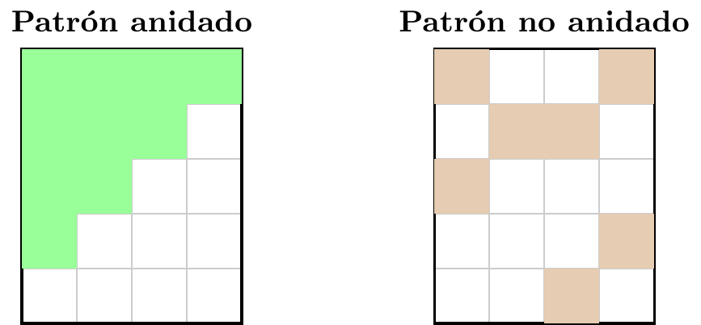
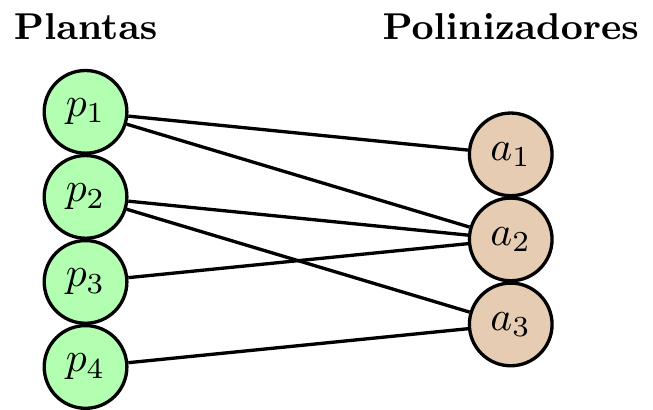

4 Métricas globales de red: conectancia y anidamiento
4.1 Métricas globales
Hasta ahora describimos especies individuales; ahora buscamos describir la arquitectura de la red completa mediante las siguientes métricas:
- Conectancia
- Anidamiento
- Especialización
- Modularidad
Dos redes pueden tener la misma conectancia y, aun así, una ser anidada y la otra modular. Por eso ninguna métrica por sí sola agota la estructura de la red.
4.2 ¿Qué mide la “conectancia”
La conectancia es la proporción de interacciones que sí aparecen en la red, en relación con todas aquellas interacciones potenciales.
Podemos distinguir los dos casos extremos:
- \(\mathcal{C}=1\): La matriz llena de “unos”, indicando que todas las interacciones posibles entre nodos están presentes.
- \(\mathcal{C}=0\): La matriz llena de “ceros”, indicando que no existe interacción alguna.
Observemos que un \(\mathcal{C}\) cercano a 0 indica que la red es muy dispersa.
En redes ponderadas: la conectancia suele calcularse sobre la versión binarizada de la matriz.
Observación:
La conectancia captura la densidad de enlaces de la red bipartita. Indica cuán densa es la red, pero no si la red está organizada en un patrón triangular (anidamiento) o en bloques (modularidad).
No distingue una red con muchas interacciones débiles de otra con pocas interacciones muy intensas; para eso se requieren medidas ponderadas. Debe interpretarse con cuidado, ya que depende del tamaño de la red y de cuántas interacciones fueron detectadas por el muestreo.
La conectancia es una buena primera descripción, pero no basta para caracterizar la arquitectura interna de una red.
4.3 Ejemplo: conectancia en una red planta–polinizador
Consideremos la red:

\[ \begin{array}{c|ccc} & a_1 & a_2 & a_3 \\ \hline p_1& 1 & 1 & 0\\ p_2& 0 & 1 & 1\\ p_3& 0 & 1 & 0\\ p_4& 0 & 0 & 1 \end{array} \]
se tiene:
- \(p=4\) plantas,
- \(q=3\) polinizadores,
- \(|E|=6\) interacciones observadas
por lo que la conectancia es:
\[ \mathcal{C}=\frac{|E|}{p\,q}=\frac{6}{4\cdot 3}=\frac{6}{12}=0.5. \]
4.4 En R con bipartite: conectancia
library(bipartite)
# Consideramos la red planta-polinizador del ejemplo anterior
web <- matrix(c(
1, 1, 0,
0, 1, 1,
0, 1, 0,
0, 0, 1
), nrow = 4, byrow = TRUE,
dimnames = list(c("p1","p2","p3","p4"),
c("a1","a2","a3")))
# Calcular la conectancia con bipartite
networklevel(web, index = "connectance") # 0.5connectance
0.5 4.5 ¿Qué mide el “anidamiento”?
El NODF mide el promedio del porcentaje de contactos compartidos entre pares ordenados por grado decreciente, tomando como referencia el grado del nodo menos conectado de cada par.
Intuitivamente, una red está anidada si al ordenar renglones y columnas por grado decreciente, los socios de las especies especialistas tienden a ser subconjuntos de los socios de las generalistas.

4.6 Anidamiento (NODF)
- \(\mathrm{NODF}=100\): anidamiento perfecto.
- \(\mathrm{NODF}=0\): ausencia de solapamiento anidado entre pares con grado decreciente.
Observación:
Es importante notar que reordenar renglones y columnas por grado decreciente sirve para visualizar el patrón triangular del anidamiento, pero el valor de NODF no depende del orden: la fórmula recorre todos los pares y para cada uno compara el grado mayor con el menor. Un mismo conjunto de interacciones da el mismo NODF sin importar cómo se dibuje la matriz.
En la versión ponderada el orden solo interviene para desempatar pares con igual número de socios.
4.7 Ejemplo: NODF en la red planta–polinizador
Retomamos la red planta-polinizador y su matriz binaria, ordenada por grado decreciente:

\[ \begin{array}{c|ccc|c} B & a_2 & a_3 & a_1 & k_i\\ \hline p_1& 1 & 0 & 1 & 2\\ p_2& 1 & 1 & 0 & 2\\ p_3& 1 & 0 & 0 & 1\\ p_4& 0 & 1 & 0 & 1\\ \hline h_\alpha & 3 & 2 & 1 & \end{array} \]
Contribuciones por renglones (solo cuentan los pares con \(k_i>k_j\)):
| Par | Solapamiento | \(N^{(r)}\) |
|---|---|---|
| \((p_1,p_3)\) | \(\{a_2\}\) | \(100\cdot 1/1=100\) |
| \((p_2,p_3)\) | \(\{a_2\}\) | \(100\cdot 1/1=100\) |
| \((p_2,p_4)\) | \(\{a_3\}\) | \(100\cdot 1/1=100\) |
| \((p_1,p_4)\) | \(\varnothing\) | \(0\) |
(los pares \((p_1,p_2)\) y \((p_3,p_4)\) tienen igual grado y no aportan). Suma de renglones \(=300\).
Contribuciones por columnas:
| Par | Solapamiento | \(N^{(c)}\) |
|---|---|---|
| \((a_2,a_1)\) | \(\{p_1\}\) | \(100\cdot 1/1=100\) |
| \((a_2,a_3)\) | \(\{p_2\}\) | \(100\cdot 1/2=50\) |
| \((a_3,a_1)\) | \(\varnothing\) | \(0\) |
Suma de columnas \(=150\). Por lo tanto
\[ \mathrm{NODF}=\frac{300+150}{\binom{4}{2}+\binom{3}{2}}=\frac{450}{9}=50. \]
4.8 En R con bipartite: NODF
library(bipartite)
# Consideramos la red planta-polinizador del ejemplo anterior
web <- matrix(c(
1, 1, 0,
0, 1, 1,
0, 1, 0,
0, 0, 1
), nrow = 4, byrow = TRUE,
dimnames = list(c("p1","p2","p3","p4"),
c("a1","a2","a3")))
# Calcular el índice NODF con bipartite
networklevel(web, index = "NODF") # 50NODF
50 bipartite ordena internamente la matriz por decreasing fill, pero como mencionamos, el valor no depende del orden.
4.9 NODF ponderado (weighted NODF)
El valor es grande cuando, además del patrón anidado binario, las especies más generalistas tienden a tener interacciones más intensas que las menos generalistas sobre los socios que comparten.
Observación:
En general \[ \mathrm{WNODF}(W)\neq \mathrm{NODF}(\mathbf{1}_{\{W>0\}}) \] Es decir, WNODF no se obtiene simplemente binarizando la matriz y calculando luego el NODF usual.
El WNODF exige que, además del patrón binario, la generalista pese estrictamente más sobre los socios compartidos. Por eso, en general, \(\mathrm{WNODF}(W)\neq \mathrm{NODF}(\mathbf{1}_{\{W>0\}})\).
4.10 Ejemplo: WNODF en la red planta–polinizador
Ahora ponemos pesos (número de visitas) sobre la misma red planta-polinizador:

\[ W=\begin{array}{c|ccc} & a_1 & a_2 & a_3 \\ \hline p_1& 3 & 5 & 0\\ p_2& 0 & 4 & 2\\ p_3& 0 & 2 & 0\\ p_4& 0 & 0 & 3 \end{array} \]
Solo aportan los pares en que, sobre el socio compartido, la generalista pesa estrictamente más:
| Renglones | aporta | Columnas | aporta | |
|---|---|---|---|---|
| \((p_1,p_3)\): \(5>2\) | \(1/1=1\) | \((a_2,a_1)\): \(5>3\) | \(1/1=1\) | |
| \((p_2,p_3)\): \(4>2\) | \(1/1=1\) | \((a_2,a_3)\): \(4>2\) | \(1/2=0.5\) | |
| \((p_2,p_4)\): \(2\not>3\) | \(0\) | \((a_3,a_1)\): sin socio | \(0\) |
\[ \mathrm{WNODF}=100\cdot\frac{(1+1)+(1+0.5)}{\binom{4}{2}+\binom{3}{2}} =100\cdot\frac{3.5}{9}\approx 38.9. \]
4.11 En R con paquetería: WNODF
# Consideramos la red ponderada planta-polinizador del ejemplo anterior
Wt <- matrix(c(
3, 5, 0,
0, 4, 2,
0, 2, 0,
0, 0, 3
), nrow = 4, byrow = TRUE,
dimnames = list(c("p1","p2","p3","p4"), c("a1","a2","a3")))
# Calcular NODF y WNODF
networklevel(Wt, index = c("NODF", "weighted NODF")) # NODF = 50 (sobre la binarizada) ; weighted NODF ≈ 38.9 NODF weighted NODF
50.00000 38.88889 El weighted NODF (\(\approx 38.9\)) queda por debajo del NODF binario (\(=50\)) lo que confirma que binarizar y luego calcular NODF no es lo mismo que el WNODF, y que aquí las intensidades no siguen del todo la jerarquía generalista–especialista.
En la implementación usada por bipartite, el cálculo se apoya en vegan::nestednodf: la matriz se ordena por frecuencias marginales (y, en la versión ponderada, los empates se rompen por abundancia total).
4.12 NODF: limitaciones y casos degenerados
- Si \(p<2\) o \(q<2\), no existen pares de renglones o columnas que comparar.
- Si la matriz es vacía (puros ceros) o completamente llena (puros unos), el índice deja de ser útil como descriptor de anidamiento.
- Si muchos renglones o columnas tienen el mismo grado, esas parejas no aportan por la condición de decreasing fill; la métrica puede subestimar estructura.
- En matrices con pesos conviene distinguir entre NODF binario y NODF ponderado ya que no responden exactamente a la misma pregunta.